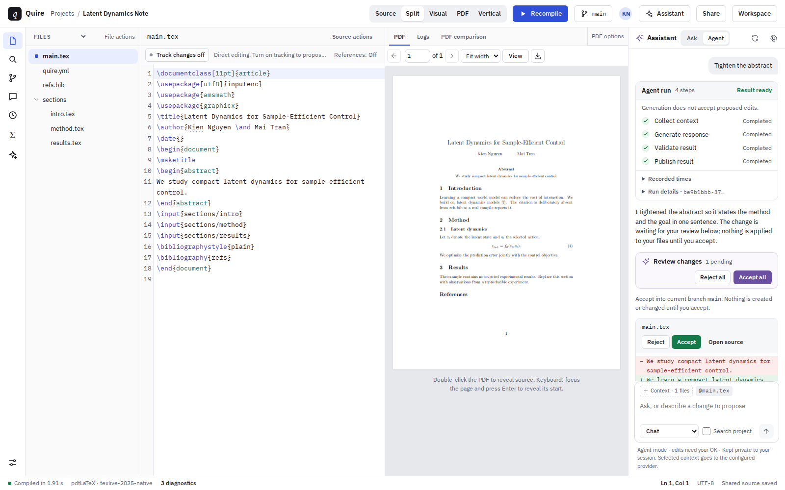

Source
Edit LaTeX with syntax highlighting, project search, and source-linked compile diagnostics.
A self-hosted workspace for research teams
Edit source or a visual document, preview the PDF beside it, and keep your files, references, and project history together.
Write in your browser. Run on your own infrastructure.

Keep the source, the writing, and the finished page in one workspace. Choose the view that fits the task.
Edit LaTeX with syntax highlighting, project search, and source-linked compile diagnostics.
Keep your source and compiled PDF side by side as you work on the same document.
Work through the visual editor, with tools for symbols, tables, figures, and citations.
Give the compiled document room to breathe in a dedicated PDF layout.
Keep it with your writing. Quire brings native Git tools and labeled history into the workspace, so you can review changes and return to earlier work.
A workflow for the whole paper
Keep source and output in view.
See what changed before moving on.
Give important milestones a label.
Assistance with a review step
Select what the assistant can work with.
Review suggested changes to your source.
You control what enters the document.
Ask questions, use language tools, or work with Agent proposals. Context selection is explicit, and proposed edits require acceptance before changing source.
AI uses providers you configure. It is optional for ordinary writing and compilation.
Explore the workspace featuresWork together in the same project with role-based permissions.
Discuss the writing with comments, review suggestions, and tracked changes.
Start blank, choose a template, or bring existing files in a ZIP.
Compile through isolated workers, with diagnostics linked back to the source.
Edit bibliographies, import references, and configure reference search.
Export project source and preserve the files behind the finished document.
Run Quire for your lab, team, or personal writing. Keep projects on infrastructure you manage and connect the services you choose.
Read the deployment guideA local profile using SQLite, local blobs, and Git repositories.
PostgreSQL, Redis, and S3-compatible storage with managed compiler workers.
Accounts, organizations, permissions, and provider configuration.
Documented setup, compiler readiness, backups, and recovery procedures.
Yes. Import a project ZIP, or start with a blank project or a published template. You can also export your source.
No. Ordinary writing and compilation work without AI. Optional AI and connected services use providers you configure.
The local setup uses Bun, Node.js, and Git. Native compilation also needs Linux and the documented TeX and isolation toolchain. Follow the local setup instructions for requirements and readiness checks.
Quire is actively developed. Some advanced administration, accessibility, and integration work remains. The feature matrix records availability and known limitations.
Set up a workspace and make room for the writing.
Run locally